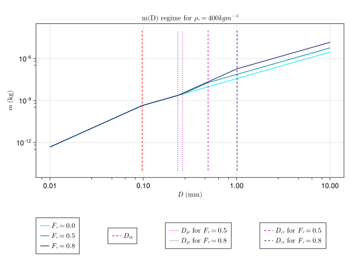
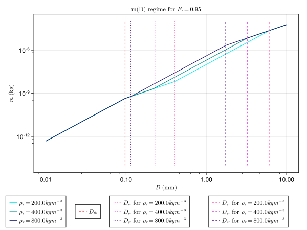

P3 Scheme
The P3Scheme.jl module implements the predicted particle properties (P3) scheme for ice-phase microphysics developed by [21] The P3 scheme is a 2-moment, bulk scheme involving a single ice-phase category with 4 degrees of freedom: total mass, rime mass, rime volume, and number mixing ratios. Traditionally, cloud ice microphysics schemes use various predefined categories (such as ice, graupel, or hail) to represent ice modes, but the P3 scheme sidesteps the problem of prescribing transitions between ice categories by adopting a single ice category and evolving its properties. This simplification aids in attempts to constrain the scheme's free parameters.
Assumed particle size distribution (PSD)
Following [21], the scheme assumes a gamma distribution for the concentration of particles per unit volume based on particle size measurements obtained by [22] in tropical and midlatitude ice clouds and implemented by [23]:
\[N'(D) = N_{0} D^\mu \, e^{-\lambda \, D}\]
where:
- $N'$ is the number concentration ($m^{-4}$),
- $D$ is the maximum particle dimension ($m$),
- $N_0$ is the intercept parameter ($m^{-4}$),
- $\mu$ is the shape parameter (unitless I believe),
- $\lambda$ is the slope parameter ($m^{-1}$).
We assume $\mu \ = 0.00191 \lambda \ ^{0.8} - 2$ for $\mu \ \in (0,6)$, which occurs only for $\frac{1}{\gamma} < ~0.17 mm$.
$N_0$ and $\lambda$ are found using different moments of the PSD, total, cumulative number concentration $N$ and mass mixing ratio $q$, where
\[N = \int_{0}^{\infty} \! N'(D) \mathrm{d}D\]
\[q = \int_{0}^{\infty} \! m(D) N'(D) \mathrm{d}D\]
Assumed particle mass relationships
The mass $m$ of particles as a function of maximum particle dimension $D$ is a piecewise function with variable breakpoints described by the following table.
| particle properties | condition(s) | m(D) relation |
|---|---|---|
| small, spherical ice | $D < D_{th}$ | $\frac{\pi}{6} \rho_i \ D^3$ |
| large, unrimed ice | $q_{rim} = 0$ and $D > D_{th}$ | $\alpha_{va} \ D^{\beta_{va}}$ |
| dense nonspherical ice | $q_{rim} > 0$ and $D_{th} < D < D_{gr}$ | $\alpha_{va} \ D^{\beta_{va}}$ |
| partially rimed ice | $q_{rim} > 0$ and $D > D_{cr}$ | $\frac{\alpha_{va}}{1-F_r} D^{\beta_{va}}$ |
| graupel (completely rimed, spherical) | $q_{rim} > 0$and $D_{gr} < D < D_{cr}$ | $\frac{\pi}{6} \rho_g \ D^3$ |
with physical constant $\rho_i \ = 916.7 kg m^{-3}$: see CliMA Parameters's ρ_cloud_ice ; empirical coefficients:
- $\alpha_{va} = 7.38 \times 10^{-11} \times 10^{6 \beta_{va} - 3}$ ($kg m^{-β_va}$), a parameter from [24], derived from measurements of mass grown by vapor diffusion and aggregation in midlatitude cirrus, and modified to agree with CliMA's units of $kg$ and $m$ rather than [24]'s $g$ and $\mu m$,
- $\beta_{va} = 1.9$, another parameter from [24];
which together determine $D_{th} = (\frac{\pi \rho_i}{6\alpha_{va}})^{\frac{1}{\beta_{va} - 3}}$ ($m$), the threshold particle dimension between small spherical and large, nonspherical unrimed ice. Relevant model state variables here are:
- $q_{rim}$, rime mass concentration;
- $q_{ice}$, total ice mass concentration;
- $B_{rim}$, bulk rime volume;
from which rime mass fraction $F_r = \frac{q_rim}{q_ice}$ and predicted rime density $\rho_{r} = \frac{q_rim}{B_rim}$ are derived. The following four thresholds ($D_{i}$) and densities ($\rho_{i}$) which form a nonlinear system solved by thresholds(ρ_r, F_r, u0) , which employs NonlinearSolve.jl:
- $D_{gr} = (\frac{6\alpha_{va}}{\pi \rho_g})^{\frac{1}{3 - \beta_{va}}}$ ($m$), a threshold defined to ensure continuity and reasonable masses for smaller D;
- $D_{cr} = [ (\frac{1}{1-F_r}) \frac{6 \alpha_{va}}{\pi \rho_g} ]^{\frac{1}{3 - \beta_{va}}}$ ($m$), the threshold separating partially rimed ice from graupel;
- $\rho_g = \rho_r F_r + (1 - F_r) \rho_d$ ($kg m^{-3}$), bulk density of graupel, calculated with the rime mass fraction weighted average of the predicted rime density and the density of the unrimed part, where
- $\rho_d = \frac{6\alpha_{va}(D_{cr}^{\beta{va} \ - 2} - D_{gr}^{\beta{va} \ - 2})}{\pi \ (\beta_{va} \ - 2)(D_{cr}-D_{gr})}$ ($kg m^{-3}$) is the density of the unrimed part.
Below are graphical representations of the m(D) regime, replicating Figures 1 (a) and (b) of [21]:
include("P3SchemePlots.jl")
p3_m_plot1(["cyan2", "cyan4", "midnightblue"], ["hotpink", "magenta3", "purple4"])
p3_m_plot2(["cyan2", "cyan4", "midnightblue"], ["hotpink", "magenta3", "purple4"])CairoMakie.Screen{SVG}

